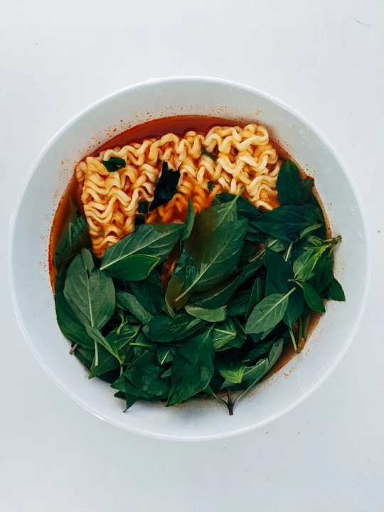

우리나라의 라면은 1960년 이후 미국의 밀가루 지원과 우리나라 정부의 쌀 소비 절약을 위한 분식 장려 정책에 따라 대중화가 시작되었으며, 기호성·편의성·실용성이 부각됨에 따라 점차 소비가 증가하여 2018년 현재 라면 소비량 전 세계 1위국이 되었다. 우리나라 라면 역사는 삼양식품이 일본에서 기계를 도입하여 1963년 9월 삼양라면을 대량 생산하게 된 이후라고 할 수 있다. 이후 1965년 롯데, 1975년 농심, 1983년 한국야쿠르트, 1987년 오뚜기 등이 5대 생산업체로 합류했다. 이 밖에 풀무원, 제일제당 등에서도 라면이 생산되고 있다. 1970년대 중반에 라면의 국내 연간 생산량이 10억 개를 돌파하였으며, 2000년대에는 20억 개에 달하게 되었다. 1980년대에 들어와서는 이전의 3분간 끓여 먹는 제품에서 착안해 더운 물만 부으면 그대로 먹을 수 있는 즉석라면 및 컵라면 등이 제조되어 즉석식품의 주역이 되었다. 또한 1970년대 말부터 미국, 일본, 중국, 대만, 호주 등으로 수출도 하게 되어 2017년 기준 3억 달러 이상의 수출액을 기록하였다. 이처럼 우리나라는 우수한 라면 제조 독자 기술을 통해 세계 1위의 라면 수출국 및 소비국이 되었다.
출처:한국민족대백과사전
이미지출처:unsplash